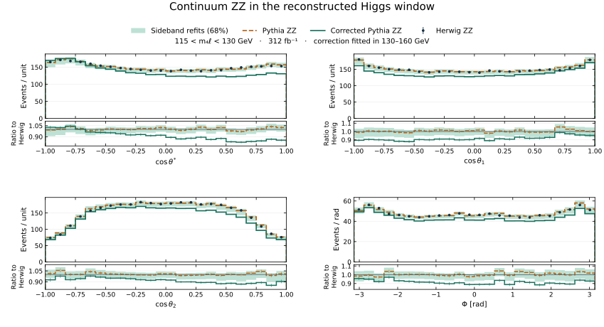
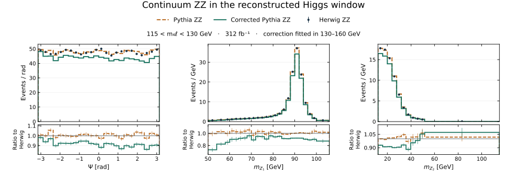

Background removal · 312 fb⁻¹
ZZ sideband transport
Herwig predicts 299.86 ZZ events. Pythia gives 301.36 before correction (+0.50%) and 274.80 after correction (-8.36%).
Return to slides · Absolute-yield plots (PDF) · Normalized-shape plots (PDF)


What the correction learned
The four-member sideband network uses seven decay observables in 130 < m₄ℓ < 160 GeV. The nominal pseudo-data contain 592 events there. The Pythia reference predicts 643.06 events, of which 1.06% are ggF. The fitted yield factor is 0.9206. In the reconstructed 115 < m₄ℓ < 130 GeV window we multiply each signed Pythia ZZ weight by the frozen yield and shape correction, then compare to the actual signed Herwig ZZ template. The validation uses 145,157 Pythia and 144,467 Herwig ZZ entries. The corrected yield differs by -25.06 events. For scale, a single Run 3 Poisson draw of the reference ZZ yield has a standard deviation of 17.32 events.
Expected ZZ yield
| Template | Expected events | Finite-MC standard error |
|---|---|---|
| Herwig ZZ | 299.86 | 0.80 |
| Pythia ZZ | 301.36 | 0.80 |
| Corrected Pythia ZZ | 274.80 | 0.75 |
On the same Pythia events, the fitted weights change the expected yield by -26.56 ± 0.167 events from finite MC. This uncertainty includes the covariance of the before and after predictions.
In the full continuum templates, the Herwig/Pythia yield ratio is 0.9916 in the sideband and 0.9950 in the Higgs window. Their ratio is 1.0034 ± 0.0046 from finite simulation statistics. This checks the underlying generator rate transfer independently of the nominal pseudo-data count.
Shape agreement
All seven normalized Pythia distributions move farther from Herwig after this fit. Each entry is half the sum of the absolute differences between the normalized Pythia and Herwig bin fractions. Zero means identical shapes at the original analysis binning. This measure separates the shape change from the integrated yield reported above.
| Observable | Before | After |
|---|---|---|
| cos θ* | 0.69% | 3.01% |
| cos θ₁ | 0.57% | 1.14% |
| cos θ₂ | 0.58% | 1.57% |
| Φ | 0.78% | 1.05% |
| Ψ | 0.73% | 1.13% |
| mZ₁ | 0.54% | 0.71% |
| mZ₂ | 0.56% | 0.69% |
Reading the ratios
Both curves use the same Herwig denominator and the same Pythia events. Each error bar propagates the signed numerator and denominator histograms using the sum of squared weights, conditional on the fitted correction. The curves are correlated. Their error bars cover finite template statistics. Uncertainty from the single nominal sideband experiment and model training is additional. A one-dimensional projection tests only the indicated observable.
For legibility, neighboring tail bins in the plots are combined until Herwig predicts at least two events. The tables and downloadable moments use the original edges, including folded flows. Pages 8–14 of the PDF also compare unit-area shapes and propagate the covariance of each bin with its normalization. The plotted yields are divided by bin width.
Sideband fit diagnostics · Signed bin sums, uncertainties and shared-event moments